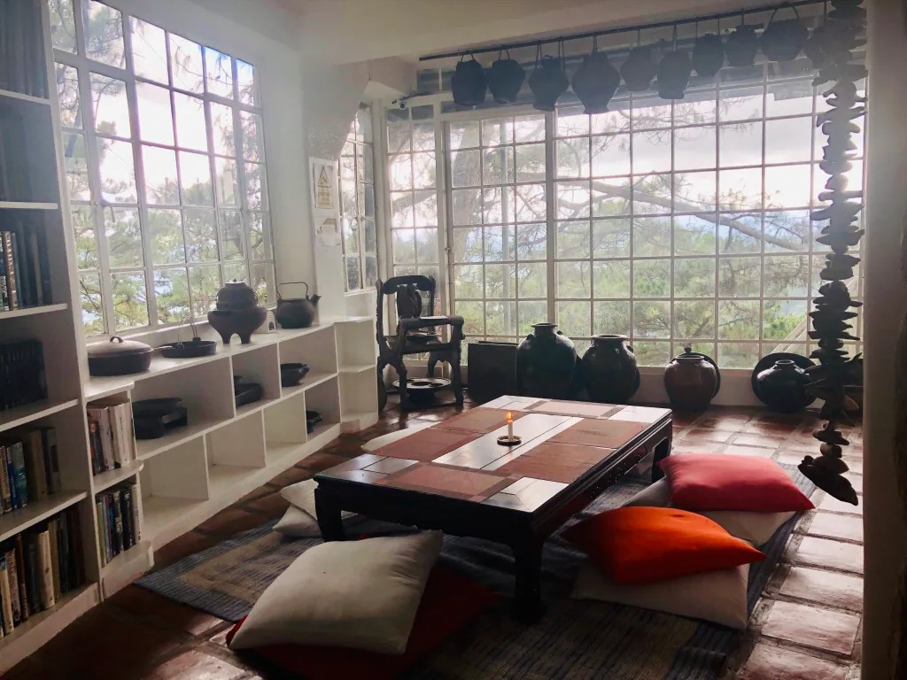
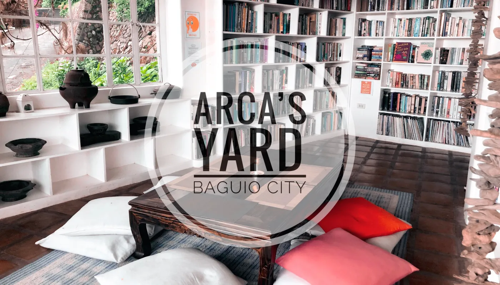

Our story...
Arca's Yard started as a small quiet space built for slow nights, warm drinks, and conversations that don't need noise. It's a place for people who want to pause for a bit.

When the city slows down, we stay open.
Mon - Thurs: 9am - 7pm
Fri - Sun: 9am - 9pm
Wednesday: Closed

Hidden away in the quiet corners of the city.
777 Tiptop, Ambuklao Road
Baguio City, Philippines

₱180

₱280
Cozy corners, warm lights, and moments worth capturing.


